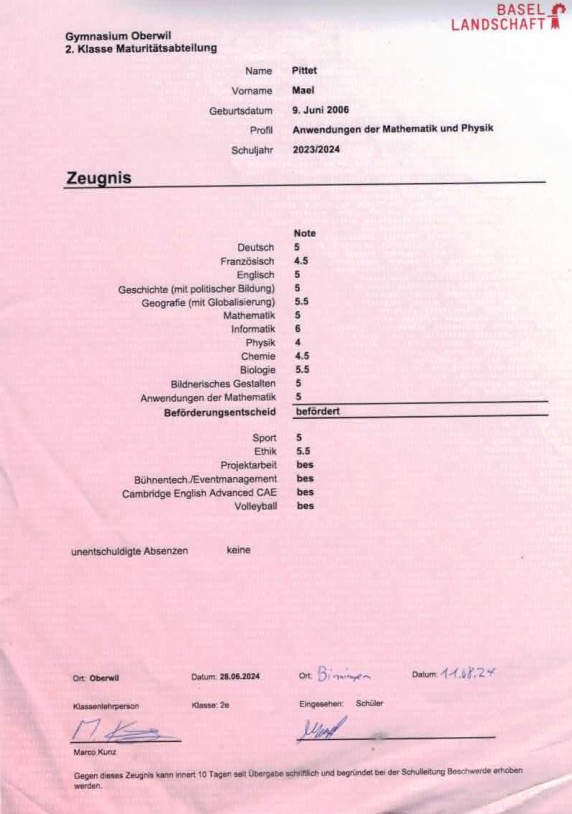
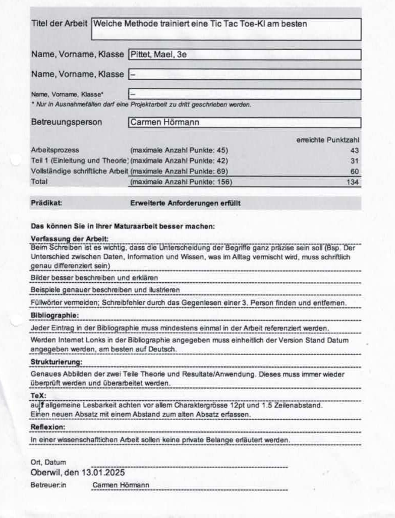
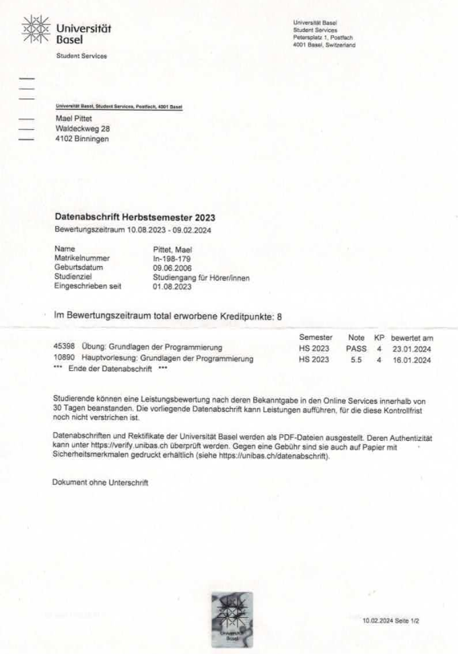
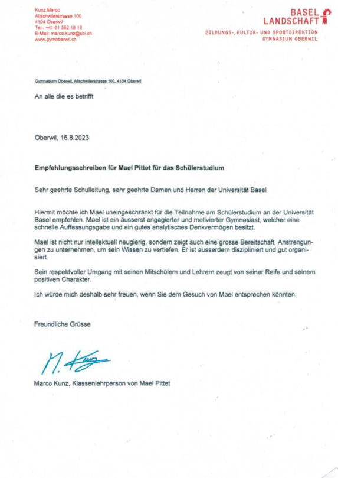
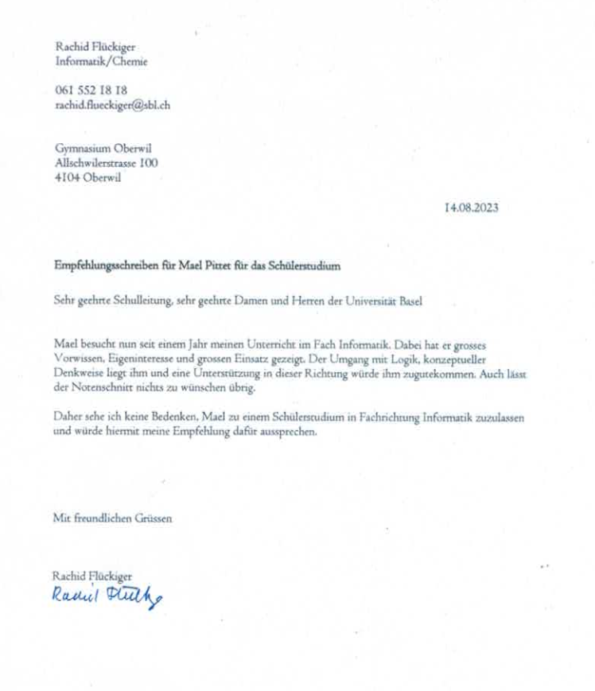

My Certifications and my Grades
I'm in the 13 Schoolyear and will finish next year.
High School Performance
 TIn my second year, I achieved the maximum grade of 6/6 in Computer Science. I also completed elective courses in English, Stage Technology, and Volleyball. My project work was graded “Advanced Requirements Met” (85%).
University Course
Thanks to my strong academic record, I was invited to attend courses at the University of Basel. I successfully completed the lecture Fundamentals of Programming with a grade of 5.5 and passed the accompanying exercises.
Recommendations
 My project work was formally recognized with strong grades and positive recommendations from both my class teacher and my computer science teacher, which enabled me to take part in university-level courses.